4 Exploring data
4.1 Introduction
This script explores the relationships among ecological variables in our dataset. We use LiDAR-derived total height (Chapter 7), commercial height, and diameter at breast height (DBH) from the Commercial Forest Inventories (Chapter 3), as well as DBH from the Permanent Plots (Chapter 1).
4.2 Setup
4.3 Exploring Lidar derived height relationships
4.3.1 Load data
4.3.2 Exploring data
Code
ordem_especies <- names(
sort(
tapply(if100_lidar$z_lidar,
if100_lidar$nome_florabr,
max),
decreasing = TRUE
))
if100_lidar$nome_florabr <- factor(if100_lidar$nome_florabr,
levels = rev(ordem_especies))
ggplot(data = if100_lidar,
aes(x = nome_florabr,
y = z_lidar)) +
stat_summary(fun = max,
geom = "col",
fill = "steelblue") +
scale_y_continuous(breaks = seq(0,
max(if100_lidar$z_lidar),
by = 10)) +
coord_flip() +
theme_minimal() +
labs(
x = "Species",
y = "Maximum Lidar derived height (m)",
title = "Maximum LiDAR-derived tree height by species")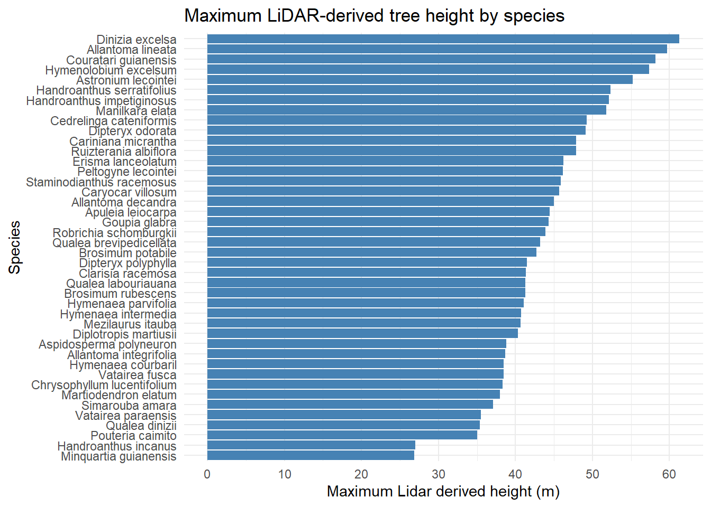
Code
min_10_obs <- if100_lidar %>%
group_by(nome_florabr) %>%
filter(n() > 10) %>%
ungroup()
ggplot(min_10_obs,
aes(x = DAP,
y = z_lidar)) +
geom_point(alpha = 0.6,
color = "steelblue") +
geom_smooth(method = "lm",
se = FALSE,
color = "black") +
facet_wrap(~ nome_florabr,
scales = "free") +
theme_minimal() +
labs(
x = "DBH (cm)",
y = "Lidar derived Height (m)",
title = "DBH x Lidar derived Height relationship by species",
subtitle = "Only species with more than 10 samples")`geom_smooth()` using formula = 'y ~ x'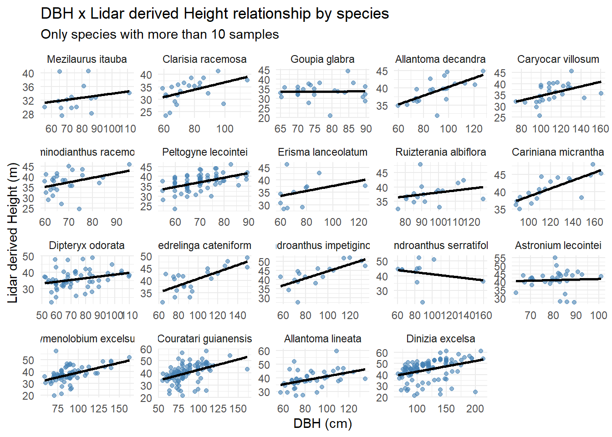
4.4 Exploring DBH relationships
4.4.1 Load data
4.4.2 Exploring data
Preparing commercial forest inventories (IF100) data.
Code
max_dap_if100 <- tapply(if100_romaneio$DAP,
if100_romaneio$nome_florabr,
max)
ordem_especies_if100 <- names(sort(max_dap_if100, decreasing = TRUE))
top20_species_if100 <- ordem_especies_if100[1:30]
highest_dbh_if100 <- if100_romaneio[if100_romaneio$nome_florabr %in% top20_species_if100, ]
highest_dbh_if100$nome_florabr <- factor(highest_dbh_if100$nome_florabr,
levels = rev(top20_species_if100))
if100_romaneio$nome_florabr <- factor(if100_romaneio$nome_florabr,
levels = rev(ordem_especies_if100))Preparing Permanent Plots data.
Code
max_dap_pps <- tapply(pps$diametrocm,
pps$nome_florabr,
max)
ordem_especies_pps <- names(sort(max_dap_pps, decreasing = TRUE))
top20_species_pps <- ordem_especies_pps[1:30]
highest_dbh_pps <- pps[pps$nome_florabr %in% top20_species_pps, ]
highest_dbh_pps$nome_florabr <- factor(highest_dbh_pps$nome_florabr,
levels = rev(top20_species_pps))
pps$nome_florabr <- factor(pps$nome_florabr,
levels = rev(ordem_especies_pps))Visualizing data.
Code
ggplot(highest_dbh_if100, aes(x = nome_florabr,
y = DAP)) +
stat_summary(fun = max,
geom = "col",
fill = "steelblue") +
scale_y_continuous(
breaks = seq(0,
max(highest_dbh_if100$DAP),
by = 50)
) +
coord_flip() +
theme_minimal() +
labs(
x = "Species",
y = "DBH (cm)",
title = "Maximum DBH by species",
subtitle = "Top 30 species with highest DBH - Forest Inventories"
)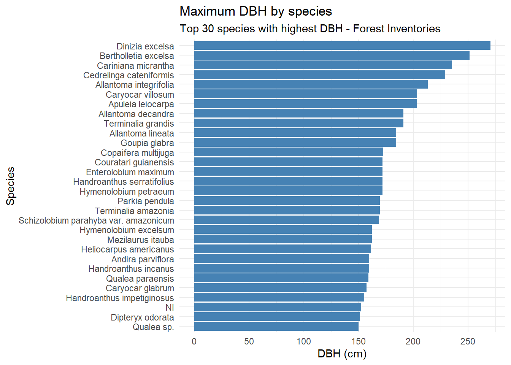
Code
ggplot(highest_dbh_pps, aes(x = nome_florabr,
y = diametrocm)) +
stat_summary(fun = max,
geom = "col",
fill = "steelblue") +
scale_y_continuous(
breaks = seq(0,
max(highest_dbh_pps$diametrocm),
by = 50)
) +
coord_flip() +
theme_minimal() +
labs(
x = "Species",
y = "DBH (cm)",
title = "Maximum DBH by species",
subtitle = "Top 30 species with highest DBH - Permanent Plots"
)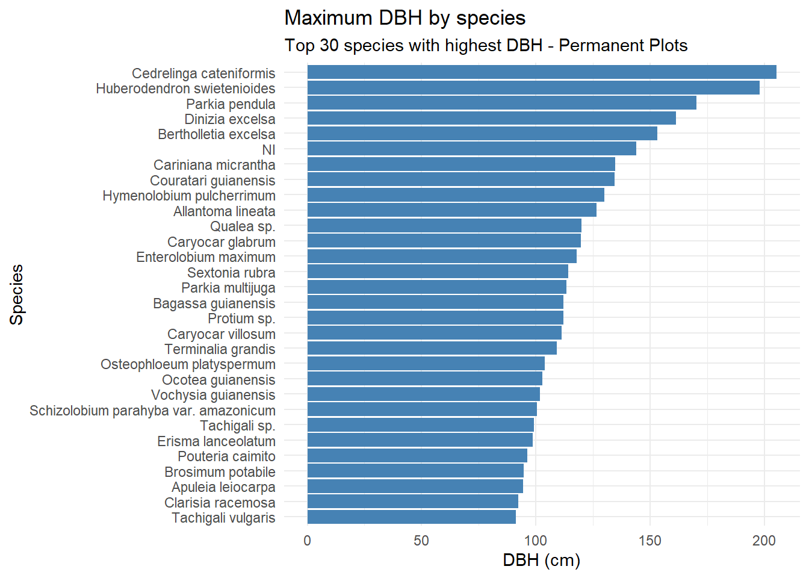
Code
ggplot(highest_dbh_if100,
aes(x = nome_florabr,
y = DAP)) +
geom_boxplot(fill = "steelblue",
color = "black") +
coord_flip() +
scale_y_continuous(
breaks = seq(0,
max(highest_dbh_if100$DAP),
by = 50)
) +
theme_minimal() +
labs(
x = "Species",
y = "DBH (cm)",
title = "DBH distribution by species",
subtitle = "Top 30 species with highest DBH - Forest Inventories"
)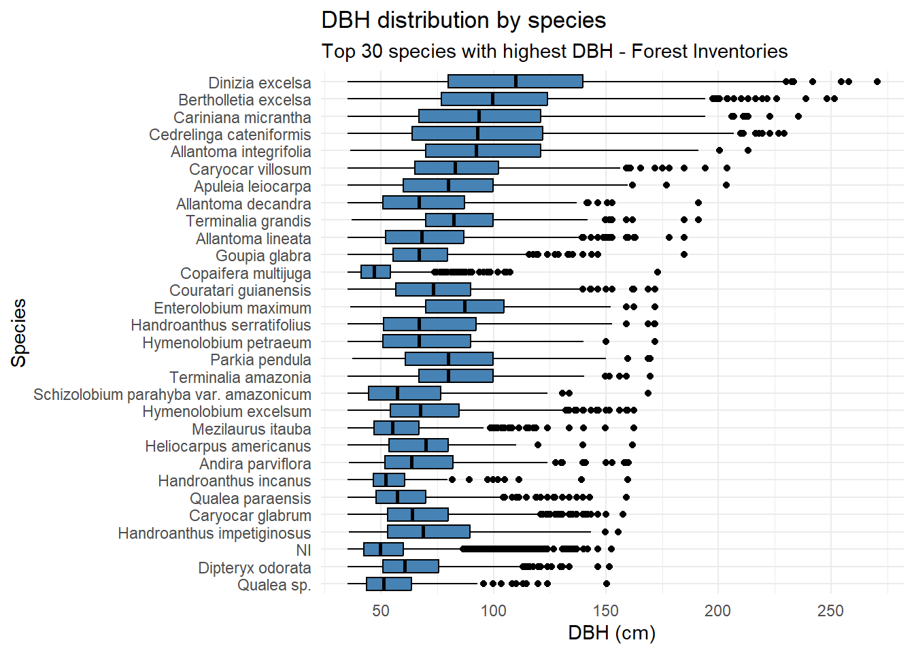
Code
ggplot(highest_dbh_pps, aes(x = nome_florabr,
y = diametrocm)) +
geom_boxplot(fill = "steelblue",
color = "black") +
coord_flip() +
scale_y_continuous(
breaks = seq(0,
max(highest_dbh_pps$diametrocm),
by = 50)
) +
theme_minimal() +
labs(
x = "Species",
y = "DBH (cm)",
title = "DBH distribution by species",
subtitle = "Top 30 species with highest DBH - Permanent Plots"
)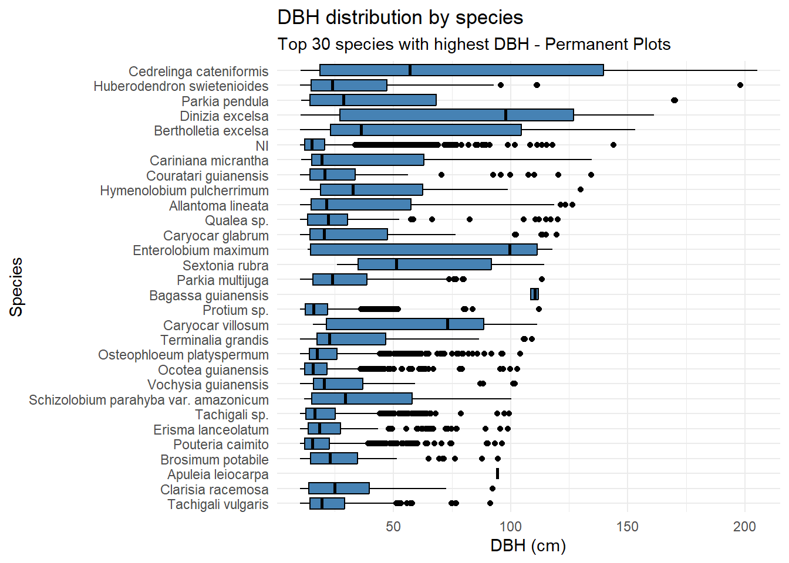
Dinizia excelsa shows the greatest total height and DBH in the IF100 dataset, but ranks only fourth in DBH within the Permanent Plots. Bertholletia excelsa is a protected species in Brazil and therefore cannot be harvested; as a result, its height could not be estimated using the LiDAR-based methodology.
4.4.3 DBH x Commercial height relationships
Code
ggplot(if100_romaneio, aes(x = DAP,
y = Altura,
color = nome_florabr)) +
geom_point(alpha = 0.6,
size = 1.5) +
geom_smooth(
method = "lm",
se = TRUE,
color = "black",
linewidth = 1
) +
theme_minimal() +
labs(
x = "DBH (cm)",
y = "Commercial Height (m)",
title = "DBH x Commercial Height relationship by species",
subtitle = "Forest inventories"
) +
guides(color = "none")`geom_smooth()` using formula = 'y ~ x'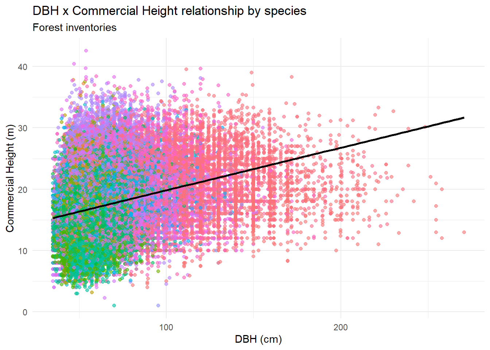
4.4.4 DBH x Commercial height relationships by APU
Code
ggplot(if100_romaneio, aes(x = DAP,
y = Altura,
color = nome_florabr)) +
geom_point(alpha = 0.6,
size = 1.5) +
geom_smooth(
method = "lm",
se = TRUE,
color = "black",
linewidth = 1
) +
facet_wrap(~ codigo) +
theme_minimal() +
labs(
x = "DBH (cm)",
y = "Commercial Height (m)",
title = "DBH x Commercial Height relationship by APU",
subtitle = "Forest inventories"
) +
guides(color = "none")`geom_smooth()` using formula = 'y ~ x'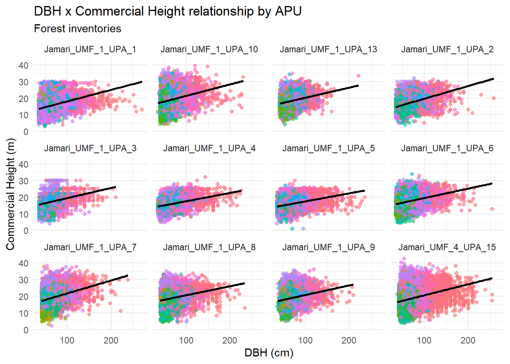
4.4.5 Permanent plots
Let’s see permanent plots structures. We will use only the first measurement (before exploitation).
Code
pps$cod_parcela <- paste(pps$cod_upa,
pps$p23_cdparcela,
sep = "_")
mean_dbh_plot_first_year <- pps %>%
group_by(cod_parcela) %>%
filter(p23_cdmedicao == min(p23_cdmedicao)) %>%
mutate(cod_parcela_ano = paste(cod_parcela,
p23_cdmedicao,
sep="_")) %>%
summarise(mean_DAP = mean(diametrocm, na.rm = TRUE))
max_plot <- mean_dbh_plot_first_year[
which.max(mean_dbh_plot_first_year$mean_DAP), ]
min_plot <- mean_dbh_plot_first_year[
which.min(mean_dbh_plot_first_year$mean_DAP), ]
binwidth_fd <- 2 * IQR(mean_dbh_plot_first_year$mean_DAP,
na.rm = TRUE) / length(mean_dbh_plot_first_year$mean_DAP)^(1/3)
ggplot(mean_dbh_plot_first_year,
aes(x = mean_DAP)) +
geom_histogram(binwidth = binwidth_fd,
fill = "steelblue",
color = "white") +
geom_vline(xintercept = max_plot$mean_DAP,
linetype = "dashed",
color = "darkred") +
geom_vline(xintercept = min_plot$mean_DAP,
linetype = "dashed",
color = "darkgreen") +
annotate(
"text",
x = max_plot$mean_DAP,
y = Inf,
label = paste0("Max: ", max_plot$cod_parcela,
"\n(", round(max_plot$mean_DAP,
1),
" cm)"),
vjust = 2,
hjust = 1,
color = "darkred",
size = 3.5
) +
annotate(
"text",
x = min_plot$mean_DAP,
y = Inf,
label = paste0("Min: ",
min_plot$cod_parcela,
"\n(",
round(min_plot$mean_DAP,
1),
" cm)"),
vjust = 2,
hjust = 0,
color = "darkgreen",
size = 3.5
) +
theme_minimal() +
labs(
x = "Mean DBH (cm)",
y = "Number of plots",
title = "Distribution of mean DBH across permanent plots",
subtitle = "Only measurement from the first year (before exploitation)")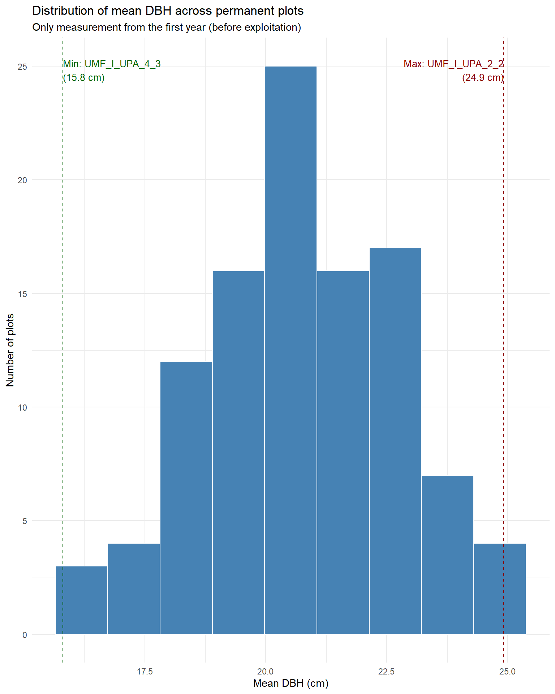
Code
pps_classes <- pps %>%
#group_by(cod_upa) %>%
mutate(
dbh_class = cut(
diametrocm,
breaks = seq(0, max(diametrocm,
na.rm = TRUE) + 10,
by = 10),
right = FALSE))
ggplot(pps_classes,
aes(x = diametrocm)) +
geom_histogram(
binwidth = 10,
fill = "steelblue",
color = "white") +
facet_wrap(~ cod_upa, scales = "free_y") +
theme_minimal() +
labs(x = "DBH class (cm)",
y = "Number of individuals",
title = "Diameter class distribution by APU",
subtitle = "Class width = 10 cm") +
theme(strip.text = element_text(size = 8),
axis.text.x = element_text(angle = 45, hjust = 1))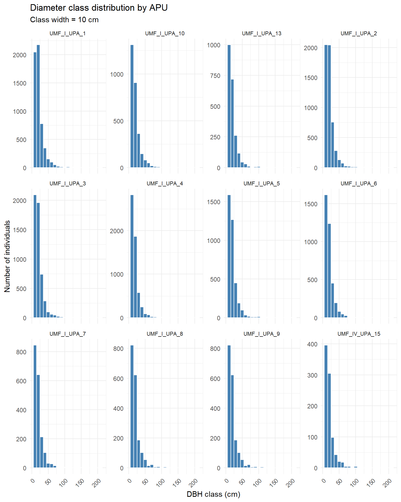
Code
ggplot(pps_classes,
aes(x = diametrocm)) +
geom_histogram(
binwidth = 10,
fill = "steelblue",
color = "white") +
facet_wrap(~ cod_parcela, scales = "fixed") +
theme_minimal() +
labs(x = "DBH class (cm)",
y = "Number of individuals",
title = "Diameter class distribution by plot",
subtitle = "Class width = 10 cm") +
theme(axis.text.x = element_text(angle = 45,
hjust = 1,
size = 7),
strip.text.x = element_text(size = 5))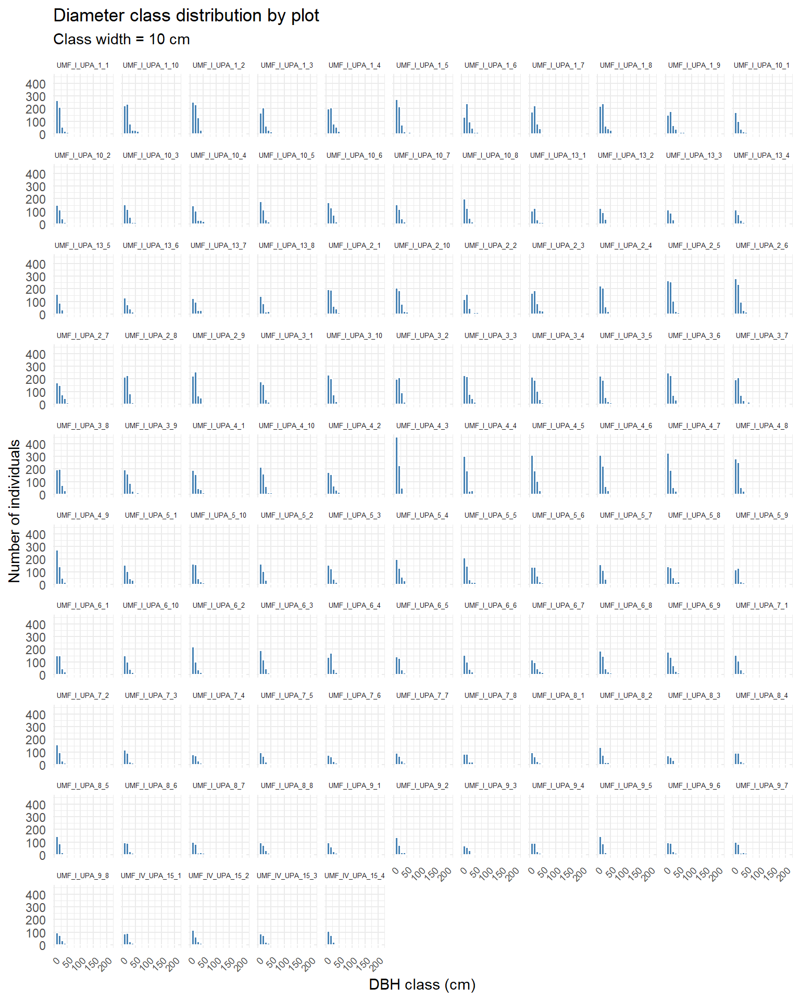
We can see most of the plots exhibit an “inverse J” distribution.
4.4.6 Temporal dynamics
Now let’s see mean DBH change along the years of measurement.
Code
mean_dbh_plot_first_year$class <- cut(
mean_dbh_plot_first_year$mean_DAP,
breaks = quantile(mean_dbh_plot_first_year$mean_DAP,
probs = seq(0, 1, 0.2),
na.rm = TRUE),
include.lowest = TRUE)
mean_dbh_plot_year <- pps %>%
group_by(cod_upa, cod_parcela, p23_cdmedicao,
exploit_year) %>%
summarise(mean_dbh = mean(diametrocm,
na.rm = TRUE),
.groups = "drop")
anos <- sort(unique(mean_dbh_plot_year$p23_cdmedicao))
ggplot(mean_dbh_plot_year,
aes(x = p23_cdmedicao,
y = mean_dbh,
group = cod_parcela)) +
geom_line(alpha = 0.6) +
geom_point(size = 1.5,
alpha = 0.8) +
## Ano de exploração
geom_vline(
aes(xintercept = exploit_year),
linetype = "dashed",
color = "red",
linewidth = 0.6) +
facet_wrap(~ cod_upa,
scales = "free_x") +
scale_x_continuous(
breaks = anos,
labels = anos) +
theme_minimal() +
theme(axis.text.x = element_text(angle = 45,
hjust = 1)) +
labs(
x = "Measurement year",
y = "Mean DBH (cm)",
title = "Temporal dynamics of mean DBH by permanent plot",
subtitle = "Dashed red line indicates exploitation year")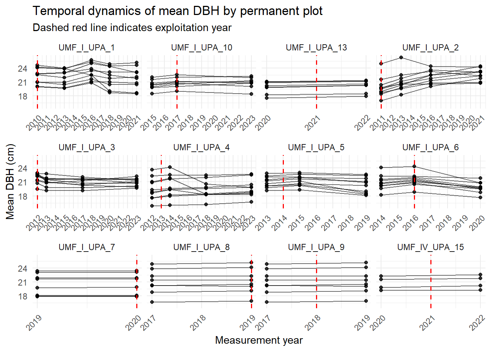